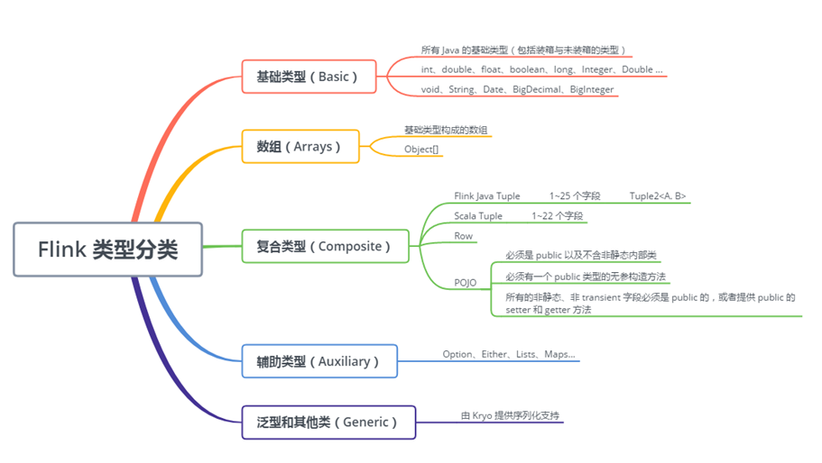

Flink 的类型分类

Flink 的类型系统源码位于 org.apache.flink.api.common.typeinfo 包,类的继承关系:
TypeInformation
TypeInformation类是所有类型描述符的基类，它和它的所有子类必须可序列化（Serializable），因为类型信息将会伴随 Flink 的作业提交，被传递给每个执行节点。
如，POJO在Flink内部使用PojoTypeInfo来表示，PojoTypeInfo继承自CompositeType，CompositeType继承自TypeInformation。TypeInformation的一个重要的功能就是创建TypeSerializer序列化器，为该类型的数据做序列化。每种类型都有一个对应的序列化器来进行序列化。
Flink会自动探测传入的数据类型，生成对应的TypeInformation，调用对应的序列化器。比如，Flink的map函数Scala签名为：def map[R: TypeInformation](fun: T => R): DataStream[R]，传入map的数据类型是T，生成的数据类型是R，Flink会推测T和R的数据类型，并使用对应的序列化器进行序列化。
以一个字符串String类型为例，Flink首先推断出该类型，并生成对应的TypeInformation，然后在序列化时调用对应的序列化器，将一个内存对象写入内存块。
手动创建typeInformationimport org.apache.flink.streaming.api.scala._ //must import 如果使用flink-sql，引入import org.apache.flink.table.api.scala._
1）TypeInformation.of(classOf[SensorReading]) or TypeInformation.of(new TypeHint[(String, Array[Byte])] {})
2）import org.apache.flink.streaming.api.scala.createTypeInformation createTypeInformation[SensorReading]
3）BasicTypeInfo.STRING_TYPE_INFO
flink会尝试识别出更多的 在分布式计算框架上传递和存储的 数据类型；比如把它当作是一个推断 表元数据 的数据库。大多数情况下，flink可以自己识别到所有信息。
有这些类型信息flink可以做：
1、用POJOs做grouping / joining / aggregating时可以用字段名(like dataSet.keyBy(“username”)).这个可以让flink在执行之前就识别到一些类型的错误。
2、flink可以更好的做序列化和数据布局。这对flink的内存优化非常重要。尽可能处理堆内部/外部的序列化数据，会使序列化非常容易。
3、
经常出现的问题：
1、注册子类。使用继承的类时，需要用StreamExecutionEnvironment or ExecutionEnvironment .registerType(clazz)注册子类，否则flink会多花很多时间来识别这个子类
2、自定义类型。对于用于自定义的数据类型，flink无法透明识别时，会回退到Kyro来识别这个类。而且并不是所有的数据类型Kyro都可以识别（flink同）。比如Google Guava里的集合类collection 都无法被自动识别。可以通过自定义序列化类来使它被识别。getConfig().addDefaultKryoSerializer(clazz, serializer) on the StreamExecutionEnvironment or ExecutionEnvironment.一般情况下很多包里已经自带了序列化类，比如protoBuffer、Thrift。代码可看下面
3、增加Type Hints。这种一般只在Java API中需要。有时候使用了所有的办法都无法识别数据类型，这种时候需要指定一个数据暗示Hints.returns(SomeType.class);。dataSet.map(new MyGenericNonInferrableFunction<Long, SomeType>()).returns(SomeType.class);returns指定生产类型。
returns() 接受三种类型的参数：
(1)字符串描述的类名（例如 “String”）字符串形式的用法即将废弃，如果确实有必要，请使用 Class.forName() 等方法来解决。
(2)TypeHint（接下来会讲到，用于泛型类型参数）
(3)Java 原生 Class（例如 String.class) 等
TypeHint支持：
（1）类，无参
（2）returns(new TypeHint<Tuple2<Integer, SomeType>>(){}).TypeHint类可以捕获通用类型信息并将其保留到运行时。
4、手动创建 TypeInformation。一般在由于Java的通用类型擦除 flink无法识别出 时使用。
protoBuffer、Thrift序列化：
1 | final ExecutionEnvironment env = ExecutionEnvironment.getExecutionEnvironment(); |
Flink支持的数据类型：
1、Java的基础类型和装箱（Integer等）
2、基础类型数组和Object数组
3、合成类型：
（1）Java 元组Tuples（Flink Java API）；最长25个字段，不允许null
（2）Scala case classes （包括scala的元组）；不允许null
（3）Row。允许null
（4）POJOs。
4、辅助类型。(Option, Either, Lists, Maps, …)
5、范型和其他类型Generic Kyro
第5个Kyro是最后的备选，尽量优化不要使用Kyro，会有大量的性能损耗。当不满足前四种时，就会被Flink认为是一种泛型（GenericType）,使用Kryo来进行序列化和反序列化。但Kryo在有些流处理场景效率非常低，有可能造成流数据的积压。我们可以使用senv.getConfig.disableGenericTypes()来禁用Kryo，禁用后，Flink遇到无法处理的数据类型将抛出异常，这种方法对于调试非常有效。
https://ci.apache.org/projects/flink/flink-docs-release-1.10/dev/types_serialization.html
注意：scala的元组从_1开始，为Java准备的元组Tuple从0开始。
FLink POJOs比较强大，必须满足的条件：
1、类是个public的独立类（没有非静态内部类）
2、必须有公共的无参构造器
3、类中的所有非静态，非瞬态成员都是公共public的，不能是final，否则有对应的getter、setter方法
通过env.registerType(BaseLog.class);或者env.getConfig().registerPojoType(BaseLog.class)注册
通过System.out.println(TypeInformation.of(BaseLog.class).createSerializer(new ExecutionConfig()));的输出可以判断自定义类是否是POJO，kyro不是POJO。
org.apache.flink.api.java.typeutils.runtime.kryo.KryoSerializer@fe305308
org.apache.flink.api.java.typeutils.runtime.PojoSerializer@f1db634d
参考：
https://ci.apache.org/projects/flink/flink-docs-release-1.10/dev/types_serialization.html （官网，建议）
https://cloud.tencent.com/developer/article/1240444
https://blog.csdn.net/qq_42596142/article/details/103763612
https://blog.csdn.net/shufangreal/article/details/105916100